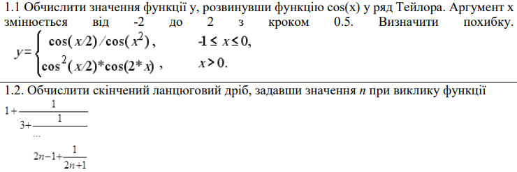
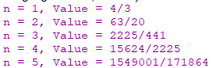

МІНІСТЕРСТВО ОСВІТИ І НАУКИ УКРАЇНИ
КИЇВСЬКИЙ НАЦІОНАЛЬНИЙ УНІВЕРСИТЕТ імені Тараса Шевченка
ФАКУЛЬТЕТ ІНФОРМАЦІЙНИХ ТЕХНОЛОГІЙ
Кафедра програмних систем і технологій
Дисципліна: «Функціональне програмування»
Лабораторна робота №2
на тему: «Рекурентні співвідношення для тригонометричних, експоненціальних функцій та ланцюгові дроби»
Виконав: студент групи ІПЗ-44мс Євсейчик Віктор
Перевірила: Ніколаєнко Анастасія Юріївна
Київ 2023
Мета роботи
Опанувати теоретичні основи застосування рекурентних співвідношень для обчислення тригонометричних, експоненціальних, степеневих функцій та розробити програми функціональними мовам програмування для обчислення їх значень
Умови завдання
Код завдання 1
(define (factorial n) ;Функція для обчислення факторіалу числа
(if (= n 0)
1
(* n (factorial (- n 1)))))
(define (cosinus-term x n) ;Функція для обчислення n-го члена ряду косинуса
(/ (expt -1 n) (factorial (* 2 n)) (expt x (* 2 n))))
(define (cosinus-series x n) ;Функція для обчислення суми ряду косинуса до n-го члена
(if (= n 0)
(cosinus-term x n)
(+ (cosinus-term x n) (cosinus-series x (- n 1)))))
(define (cosinus x) ;Функція для обчислення косинуса за допомогою ряду косинуса
(cosinus-series x 10)) ;Точність
(define (y x) ;Функція y, яка обчислює значення заданої функції в залежності від x
(if (<= -1 x 0)
(/ (cos (/ x 2)) (cos (* x x)))
(* (expt (cos (/ x 2)) 2) (cos (* 2 x)))))
(define (calculate-error approx-value actual-value) ;Функція для обчислення похибки між апроксимованим та фактичним значеннями
(abs (- approx-value actual-value)))
(define (function x) ;Функція для використання зазначеної функції для різних значень x
(let ((approx-value (y x))
(actual-value (cosinus (/ x 2))))
(display "x = ")
(display x)
(display " | Приблизне значення = ")
(display approx-value)
(display " | Фактичне значення = ")
(display actual-value)
(display " | Похибка = ")
(display (calculate-error approx-value actual-value))
(newline)))
;Використання функції для різних значень x
(do ((x -2.0 (+ x 0.5)))
((> x 2.0))
(function x))
Результати

Код завдання 2
(define (finite-continued-fraction n) ;Функція для обчислення скінченого ланцюгового дробу
(if (= n 0)
1
(+ (- (* 2 n) 1) (/ 1 (+ (* 2 n) 1) (finite-continued-fraction (- n 1))))))
;Виконання функції для різних значень n
(do ((n 1 (+ n 1)))
((> n 5)) ;Завершити цикл, якщо n перевищує 5
(display "n = ")
(display n)
(display ", Value = ")
(display (finite-continued-fraction n))
(newline))
Результати
Висновок
Основна увага була приділена створенню власної функції для розрахунку суми ряду Тейлора за рекурентним співвідношенням. Також визначена похибка обчислення, що визначається як різниця абсолютних значень наближеного обчислення та стандартного значення функції, обчисленого за допомогою бібліотечних математичних функцій.
Для перевірки правильності роботи було обчислено значення функції cos(x) у ряді Тейлора для аргументів від -2 до 2 з кроком 0.5, а також скінченого ланцюгового дрібу, вказавши значення n при виклику функції.